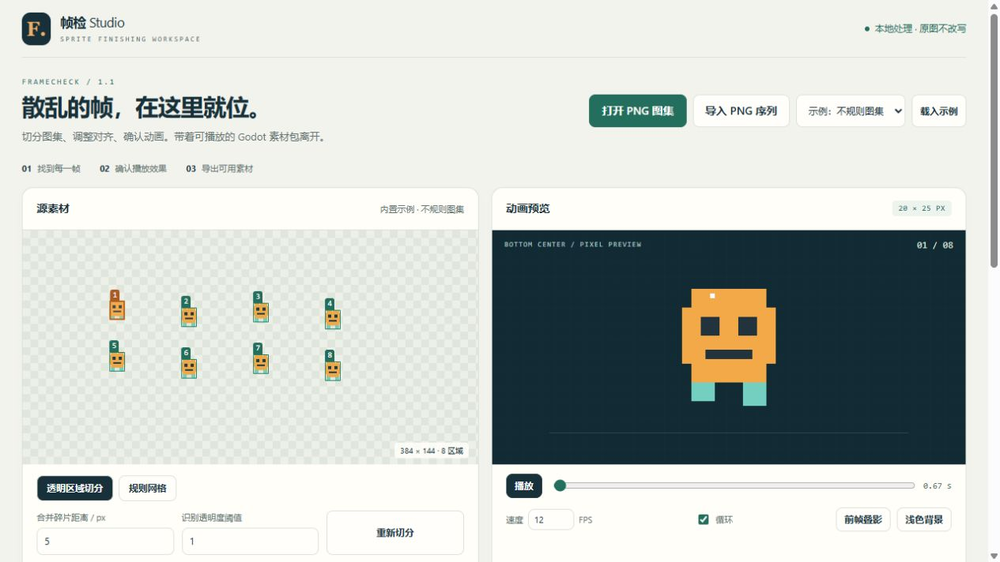
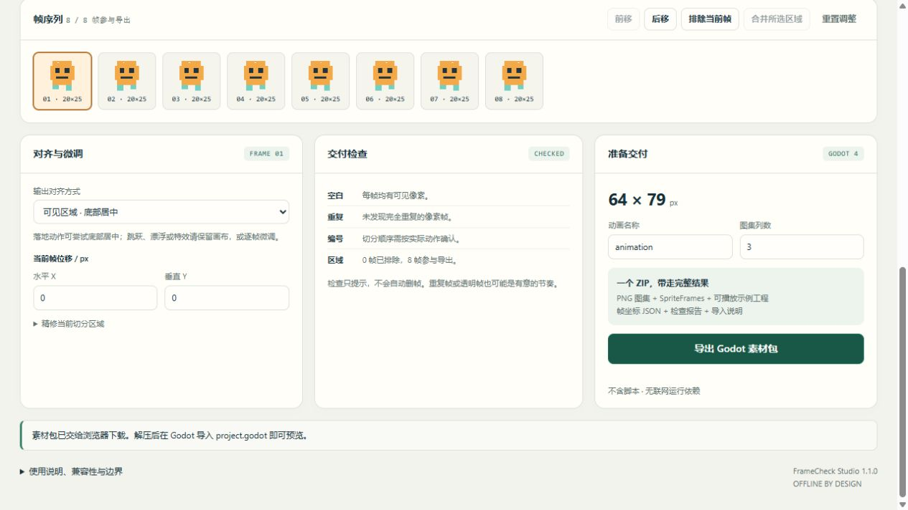

LESS FRAME WRANGLING. MORE PLAY.
把散乱的帧，
变成可播放的动画。
已有 PNG 素材，却卡在切分、对齐和逐帧配置？在一个离线工作台里检查好，再带着 Godot 素材包离开。
免费示例可以切分、调整、播放和导出；处理自己的素材使用完整版。

01 / FIND
先找到每一帧
透明区域自动切分，或按网格切分。自动框不准确时，可以修框、合并和排除。
02 / ALIGN
把动作检查清楚
重新排序、逐帧微调、前帧叠影。跳跃动作可保留原画布中的有意位移。
03 / PLAY
带走能使用的文件
一个 ZIP 包含 PNG 图集、SpriteFrames、示例工程、JSON 与检查报告。

为整理动画素材而做。
适合已有透明 PNG 图集或独立帧、正在使用 Godot 4 的开发者。它将一个具体的准备流程放在一起，减少反复切换和手工填写帧坐标。
不生成角色，不解决生成动画中的角色一致性，不是完整的绘画软件。复杂特效和相连图形仍可能需要人工判断。
验证记录：8 帧示例已逐像素核对，Godot 4.7.2 实际加载、帧率、资源路径和播放检查通过。这不代表所有素材或版本均已验证。
FULL OFFLINE EDITION / 1.1.0
¥19.90 / 一次购买
- 完整离线 HTML 与中文说明
- 自己的 PNG 图集与帧序列导入
- 当前固定版本持续离线使用
- 无模型调用、服务器或运行时月费
尚未开售：正在准备平台认证与自动交付。目前不会收款。
查看创作者主页与开售状态格式、尺寸与兼容性
静态 PNG；图集最大 2048×2048；独立帧最多64张，每张最大1024×1024；单文件8 MiB，总文件32 MiB；输出图集最大4096×4096。面向桌面 Chrome / Edge。自动化测试使用 Windows 内置 Chromium，未覆盖全部浏览器。先体验示例，再决定购买。
我的素材会上传吗？
处理工具不含联网请求、统计、外部字体或自动更新，不改写原文件。打开这个介绍页会向托管方请求页面和图片；只有点击爱发电链接才会前往该平台。页面关闭后不保存编辑状态，请及时导出。
购买包含未来更新吗？
购买范围是1.1.0固定版本，不承诺未来大版本、定制功能或无限维护。使用问题通过购买订单联系，交付与退款按适用法律和平台规则处理。